Dataviz
Una visualización de datos correcta puede expresar de forma resumida y clara gran cantidad de información, ayudando a interpretar y asimilar la información más facilmente.
Repositorio Git:
https://github.com/MarioC0093/dataviz/blob/main/README.md
Librerías comunes:
1 Gráfico de Gannt
Gráfico de Gannt de un proceso de selección.
Se tiene la fecha de inicio y de finalización de cada tarea. Para el status de cada tarea se compara la fecha actual con la fecha de finalización de la tarea.
Datos
Código
tasks <-
data.frame(
task = factor(c("Revisión de CV",
"Entrevista inicial",
"Prueba técnica",
"Llamar referencias",
"Entrevista final",
"Oferta"),
levels = c("Revisión de CV",
"Entrevista inicial",
"Prueba técnica",
"Llamar referencias",
"Entrevista final",
"Oferta")),
start = as.Date(c("2024-01-01",
"2024-01-10",
"2024-01-15",
"2024-01-15",
"2024-01-20",
"2024-02-01")),
end = as.Date(c("2024-01-07",
"2024-01-15",
"2024-01-25",
"2024-01-16",
"2024-02-05",
"2024-02-15"))
)
tasks <- tasks %>%
mutate(
# Sustituir la fecha por Sys.Date()
fecha_actual = "2024-01-17",
status = case_when(
start > "2024-01-17" ~ "planned",
start < "2024-01-17" & end > "2024-01-17" ~ "on track",
start < "2024-01-17" & end < "2024-01-17" ~ "done",
TRUE ~ "delayed")
) |> arrange(start)
tasks task start end fecha_actual status
1 Revisión de CV 2024-01-01 2024-01-07 2024-01-17 done
2 Entrevista inicial 2024-01-10 2024-01-15 2024-01-17 done
3 Prueba técnica 2024-01-15 2024-01-25 2024-01-17 on track
4 Llamar referencias 2024-01-15 2024-01-16 2024-01-17 done
5 Entrevista final 2024-01-20 2024-02-05 2024-01-17 planned
6 Oferta 2024-02-01 2024-02-15 2024-01-17 plannedCódigo.
Código
tasks |> ggplot(aes(x = start, xend = end, y = task, yend = task, color = status)) +
geom_segment(size = 6) +
scale_color_manual(values = c("on track" = "lightgreen",
"delayed" = "yellow3",
"planned" = "lightblue1",
"done" = "grey")) +
labs(title = "Proceso de selección de personal",
x = "Fecha inicio de la tarea",
y = "Fase del proceso",
color = "Status") +
theme_minimal() + geom_vline(xintercept = as.numeric(as.Date("2024-01-17")), linetype="dotted",
color = "black", size=0.5) +
geom_text(x=as.numeric(as.Date("2024-01-17")), y=1.5, label=Sys.Date(),
angle=90, color = "darkgrey", size=3)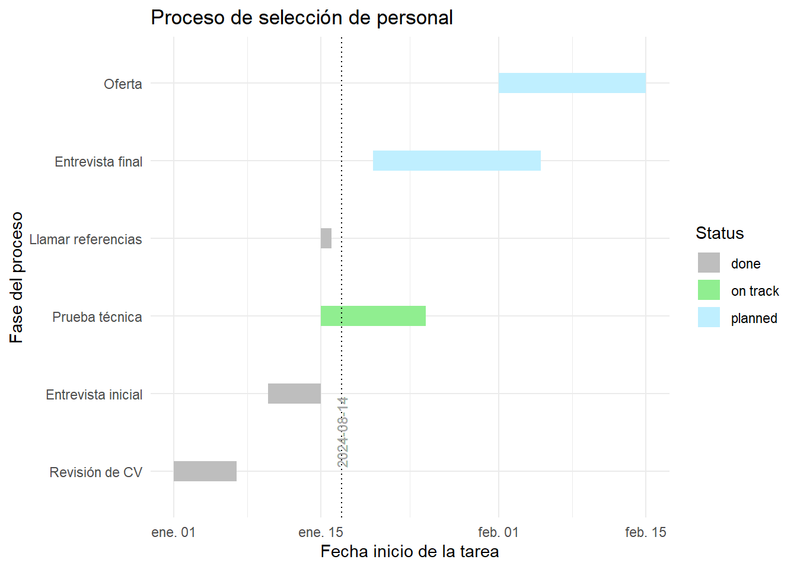
2 Word cloud
Word cloud de las primeras diez mil palabras del Quijote.
Librerías específicas.
Datos.
Fuente: https://www.gutenberg.org/cache/epub/2000/pg2000.txt
Código.
Código
# Leo el Quijote
quijote <- readLines("data/quijote.txt", encoding = "UTF-8")
# Concateno todas las líneas en una sola cadena
quijote <- paste(quijote, collapse = " ")
# Convierto el Quijote a minúsculas, elimino caracteres especiales
quijote <- tolower(quijote)
quijote <- str_replace_all(quijote, "[^a-záéíóúüñ]", " ")
# Dividir el texto en palabras y eliminar stop words
quijote_words <- unlist(strsplit(quijote, "\\s+"))
quijote_words <- quijote_words[!quijote_words %in% tm::stopwords("spanish")] # análogo: quijote_words <- quijote_words[!quijote_words %in% stopwords::stopwords("spanish")]
quijote_words <- quijote_words[!quijote_words %in% tm::stopwords("spanish")]
# Filtrar las palabras vacías (espacios en blanco) y obtener las primeras 1000 palabras
quijote_words <- quijote_words[quijote_words != ""]
first_1000_words <- quijote_words[1:10000]Código
wordcloud(words = first_1000_words, min.freq = 10, colors = brewer.pal(8, "Dark2"))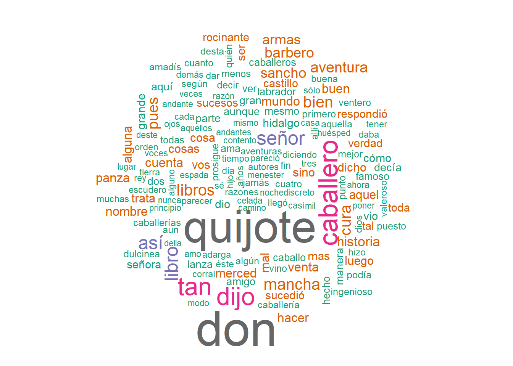
3 Parlamento
Se representa los votos recibidos por cada partido político en las elecciones de noviembre de 2019.
El número de escaños representado para cada partido político es proporcional a los votos recibidos y no representa el método D’Hondt.
Librerías específicas.
Código
Datos.
Código
datos_elecciones <- read_csv(file = "data/datos_elecciones_brutos.csv")
datos_elecciones <- datos_elecciones |> filter(anno==max(anno)) |> filter(mes==max(mes))
# Elimino variables sin información
cols_sin_informacion <- datos_elecciones |> select(1:15) |>
summarise(across(everything(), n_distinct)) |> pivot_longer(cols = everything()) |>
filter(value==1) |> select(name) |> pull()
datos_elecciones <- datos_elecciones |> select(-all_of(cols_sin_informacion))
# Pivoto los datos
datos_elecciones <- datos_elecciones |>
pivot_longer(cols = -c(0:votos_candidaturas),
names_to = "partido_politico",
values_to = "votos") |>
drop_na(votos)
# Creo las siglas de cada partido y agrupo los votos por las siglas
source("scr/mutate_siglas.R")
datos_elecciones <- mutate_siglas(datos_elecciones)
datos_elecciones <- datos_elecciones |>
summarise(votos = sum(votos), .by=everything()[! everything() %in% c('votos')])
datos_elecciones <- datos_elecciones |>
mutate(siglas = fct_reorder(siglas, votos, .fun = sum))Código
# Defino la paleta de colores
datos_elecciones <- datos_elecciones |>
mutate(color_politico = case_when(siglas == "PP" ~ "#3399FF",
siglas == "PSOE" ~ "#F6350B",
siglas == "C's" ~ "#FF5824",
siglas == "PNV" ~ "#008135",
siglas == "BNG" ~ "#76b3dd",
siglas == "COMPROMÍS" ~ "#de6c25",
siglas == "CiU" ~ "#FF0000",
siglas == "UP" ~ "#6D50B3",
siglas == "ERC" ~ "#ffbf41",
siglas == "EH - BILDU" ~ "#00bda1",
siglas == "MÁS PAÍS" ~ "#E61455",
siglas == "VOX" ~ "#73B446",
TRUE ~ "#462B25"))Código.
Código
parlamento <- datos_elecciones |>
summarise(votos=sum(votos), .by = c(siglas, color_politico))
parlamento <- parlamento |>
mutate(asientos = round(350*votos/sum(votos))) |>
select(-votos)
semicircle <- parliament_data(election_data = parlamento,
type = "semicircle", # Tipo de parlamento
parl_rows = 7, # Número de filas del parlamento
party_seats = parlamento$asientos) # Asientos por partido
semi2 <- ggplot(semicircle, aes(x = x, y = y, colour = siglas)) +
geom_parliament_seats() +
theme_ggparliament() +
labs(title = "Segundas elecciones de 2.019", x = "", y = "") +
scale_colour_manual(values = semicircle$color_politico,
limits = semicircle$siglas) +
theme(legend.position="bottom")
semi2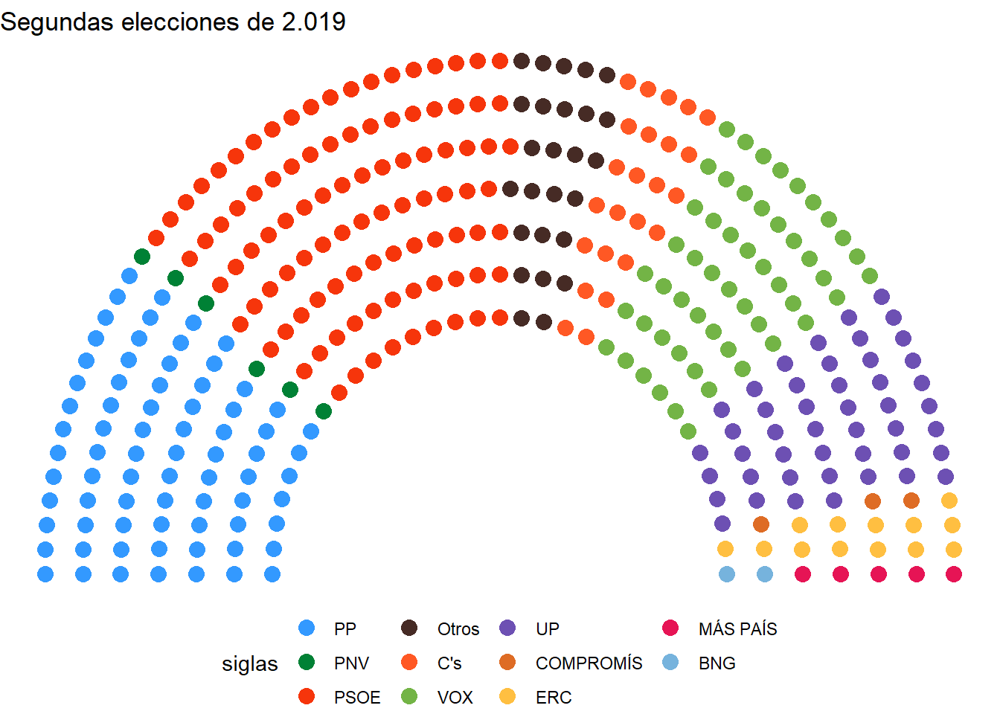
4 Gatitos e inflacción
Librerías específicas.
Datos.
Código
inflation <- rbind(read_excel("data/inflaccion.xlsx", sheet = "Spain"),
read_excel("data/inflaccion.xlsx", sheet = "Italy"))
colnames(inflation) <- c('annyo','inflaccion','annyo','inflaccion')
inflation <- rbind(inflation[,c(1,2)],inflation[,c(3,4)])
inflation[c('IPC', 'País', "annyo")] <- str_split_fixed(inflation$annyo, " ", 3)
inflation <- inflation |> mutate(inflaccion = readr::parse_number(inflaccion)/100,
annyo = as.numeric(annyo))Código.
Código
inflation <- inflation |> mutate(gato = case_when(País == "España" ~ 'nyancat',
País == "Italia" ~ 'pop_close'))
inflation |> ggplot(aes(x = annyo, y = inflaccion, group = País, color = País)) +
geom_line(size = 0.5) +
geom_cat(aes(cat = gato), size = 1.5) +
xlab("Año") +
ylab("Inflacción") +
transition_reveal(annyo) +
scale_colour_discrete(
labels = function(x) {
ifelse(x == "Other", "Other", paste0("*", x, "*"))
}
) +
theme_minimal() +
theme(legend.text = element_markdown(), # Esto para conseguir usar la cursiva
legend.key = element_rect(fill = "white", color = "black"),
legend.background = element_rect(fill = "lightgrey", color = "red"),
legend.box.background = element_rect(color = "black"),
legend.title = element_text(face = "italic")) +
labs(title = "Inflacción histórica anual de España e Italia",
subtitle = "Diciembre vs diciembre año anterior",
caption = "Fuente: www.inflation.eu")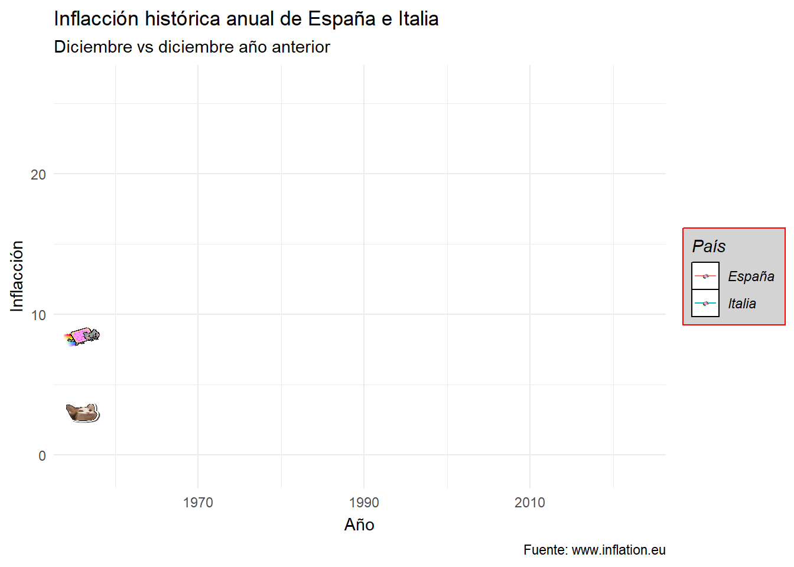
5 Gráfico de dispersión (1)
Librerías específicas.
Código
Código.
Código
penguins |> ggplot(aes(x = bill_length_mm, y = bill_depth_mm, color = species)) +
geom_point(size = 2, alpha = 0.6) +
geom_smooth(method = "lm", se = FALSE, linetype = "dashed", color = "black") + # Línea de regresión
geom_smooth(aes(group=species, color=species), method = "lm", se = FALSE, linetype = 6) + # Línea de regresión por grupos
scale_color_manual(values = c("Adelie" = "#FF5733", "Chinstrap" = "#33FF57", "Gentoo" = "#3357FF")) + # Colores personalizados
labs(
title = "Relación entre la longitud y la Profundidad del Pico de los Pingüinos",
subtitle = "Diferentes especies de pingüinos en el archipiélago Palmer",
x = "Longitud del Pico (mm)",
y = "Profundidad del Pico (mm)",
color = "Especie"
) +
theme_minimal(base_size = 8) + # Tema minimalista con tamaño de fuente base
theme(
plot.title = element_text(face = "bold", hjust = 0.5, size = 12),
plot.subtitle = element_text(hjust = 0.5, size = 12),
axis.title = element_text(face = "italic"), # ejes en cursiva
legend.position = "top",
legend.background = element_rect(fill = "lightblue1", color = "blue", size = 0.5), # fondo y borde de la leyenda
panel.grid.major = element_line(color = "gray80") # líneas de cuadrícula
)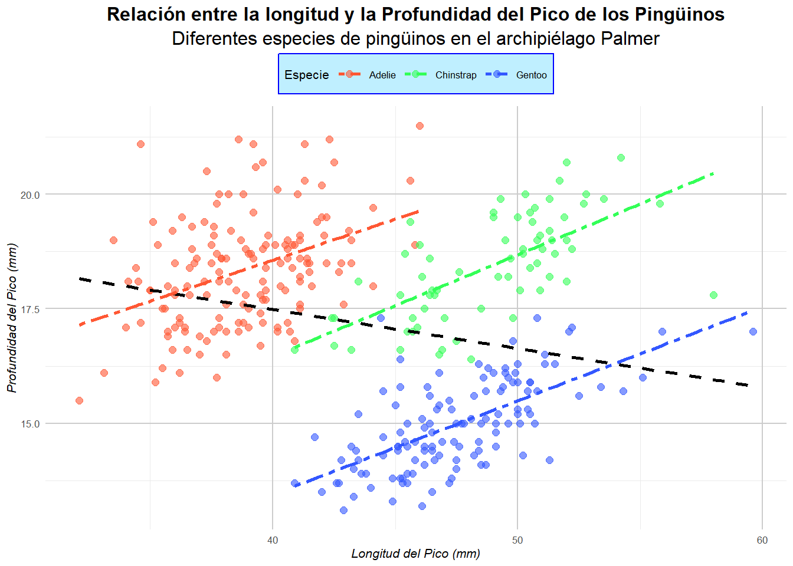
6 Gráfico de dispersión (2)
Código
mtcars |> ggplot(aes(x = wt, y = mpg, color = factor(cyl), shape = factor(gear))) +
geom_point(size = 4) +
scale_color_manual(values = c("red", "blue", "green"),
name = "Cilindrada (cyl)",
labels = c("4 cilindros", "6 cilindros", "8 cilindros")) +
scale_shape_manual(values = c(16, 17, 18),
name = "Engranaje (gear)",
labels = c("3 marchas", "4 marchas", "5 marchas")) +
labs(title = "Relación entre Peso y Consumo de Combustible",
subtitle = "Datos del conjunto mtcars",
x = "Peso (1000 lbs)",
y = "Millas por Galón (mpg)",
caption = "Fuente: Motor Trend Car Road Tests") +
theme_minimal() +
theme(legend.position = "bottom",
legend.title = element_text(face = "bold", size = 8),
legend.text = element_text(size = 6),
legend.key = element_rect(fill = "white", color = "black"), # Fondo de la leyenda blanco con borde negro
legend.background = element_rect(fill = "lightgrey", color = "black"), # Fondo de la leyenda gris claro con borde negro
legend.box.background = element_rect(color = "black")) # Borde negro alrededor de la caja de la leyenda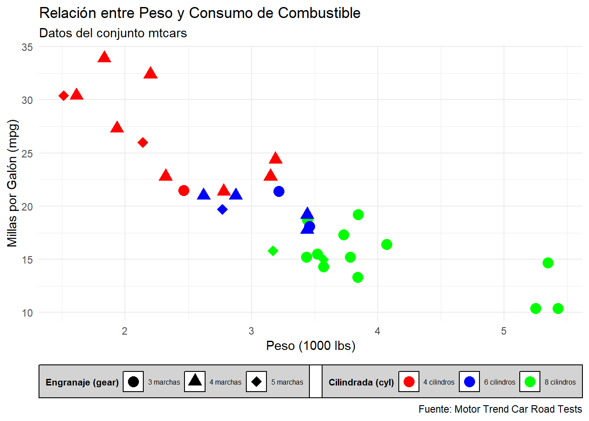
7 Boxplot
Librerías específicas.
Código
Código
# Crear el gráfico de caja
penguins |> ggplot(aes(x = species, y = body_mass_g, fill = sex)) +
geom_boxplot(outlier.color = "yellow3", outlier.shape = 16, outlier.size = 3) + # personalización de outliers
scale_fill_manual(values = c("male" = "#FF6347", "female" = "#4682B4"), na.value ="white") +
labs(
title = "Distribución de la Masa Corporal por Especie y Sexo",
subtitle = "Pingüinos del archipiélago Palmer",
x = "Especie de Pingüino",
y = "Masa Corporal (g)",
fill = "Sexo"
) +
theme_classic(base_size = 10) + # Tema clásico con tamaño de fuente base
theme(
plot.title = element_text(face = "bold", hjust = 0.5, size = 12), # Título en negrita y centrado
plot.subtitle = element_text(hjust = 0.5, size = 12), # Subtítulo centrado
axis.title = element_text(face = "bold"), # Ejes en negrita
legend.position = "right",
panel.background = element_rect(fill = "lightgray") # Fondo del panel en gris claro
)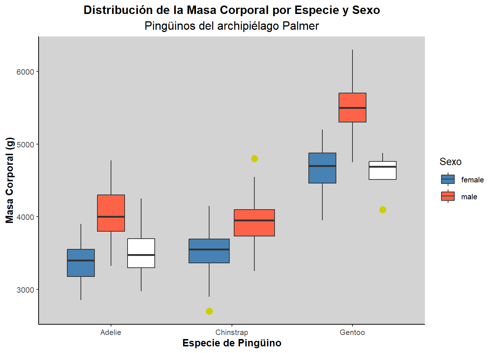
8 Mapa iteractivo
https://github.com/CSSEGISandData/COVID-19?tab=readme-ov-file
Código
# Datos ficticios de COVID-19 por provincias en España
covid_data <- data.frame(
provincia = c("Madrid", "Barcelona", "Valencia", "Sevilla", "Zaragoza"),
lat = c(40.4168, 41.3851, 39.4699, 37.3891, 41.6488),
lon = c(-3.7038, 2.1734, -0.3763, -5.9845, -0.8891),
casos = c(500000, 450000, 200000, 180000, 150000)
)Código
# Crear el mapa interactivo
leaflet(covid_data) %>%
addTiles() %>% # Añadir el fondo del mapa
addCircleMarkers(
~lon, ~lat, # Coordenadas
radius = ~sqrt(casos) / 1000, # Tamaño del círculo proporcional al número de casos
color = "red",
fillColor = "red",
fillOpacity = 0.7,
popup = ~paste0("<strong>Provincia: </strong>", provincia,
"<br><strong>Casos: </strong>", casos)
) %>%
addLegend(
position = "bottomright",
title = "Número de Casos",
values = ~casos,
colors = c("red","yellow"),
labels = c("Menos", "Más"),
opacity = 0.7
) %>%
setView(lng = -3.7038, lat = 40.4168, zoom = 6) # Centrar el mapa en España9 Gráfico de Radar o Araña
Librerías específicas.
Datos.
Código.
Código
# La función radarchart no tiene un argumento para cambiar el color del fondo del panel
par(bg = "#f2feff")
# El gráfico no abarca todo el panel. Pequeño truco para hacer que el gráfico parezca más grande
# (Al final no lo incliyo porque relleno ese espacio con el título del gráfico)
par(mar = c(2, 2, 2, 2))
# Defino paleta de colores
paleta_colores <- paletteer_d("ggthemes::wsj_colors6")Código
df |> as.data.frame() |>
radarchart(axistype = 2, # Tipo de ejes
maxmin = TRUE, # Incluir los valores máximo y mínimo del dataser
title = "Serie temporal de muertes accidentales en EE.UU.",
# Tamaño de las labels de los vértices del polígono
vlcex = 1,
# Tamaño de las valores de los vértices del polígono
palcex=0.6,
# Colores para las líneas de las series
pcol = paleta_colores,
# Colores con transparencia para las áreas de las series
pfcol = alpha(paleta_colores, 0.05),
# Parámetros de la cuadrícula
cglcol = "skyblue", # Color de la cuadrícula
cglty = 1, # Tipo de línea de la cuadrícula
axislabcol = "blue", # Color de las etiquetas de los ejes
#caxislabels = seq(0, 20, 5), # Etiquetas de los ejes
cglwd = 0.8) # Ancho de la línea de la cuadrícula
# Añadir título y subtítulo
title(#main = "",
sub = "Se muestran los años de 1973 a 1978",
line = 1) # Ajusta la posición del título y subtítulo
# Añadir la leyenda al gráfico
legend("right",
legend = rownames(df)[-c(1,2)], # Texto de la leyenda
bty = "n", # Sin caja alrededor de la leyenda
pch = 20, # Tipo de símbolo en la leyenda
col = alpha(paleta_colores, 0.7), # Colores de la leyenda
text.col = "grey25", # Color del texto de la leyenda
pt.cex = 1, # Tamaño de los puntos en la leyenda
cex = 0.8, # Tamaño del texto de la leyenda
#x.intersp = 0.1, # Espaciado horizontal entre símbolos y texto
#y.intersp = 0.1, # Espaciado vertical entre líneas de la leyenda
title = "Años", # Título de la leyenda
title.cex = 0.9) # Tamaño del texto del título de la leyenda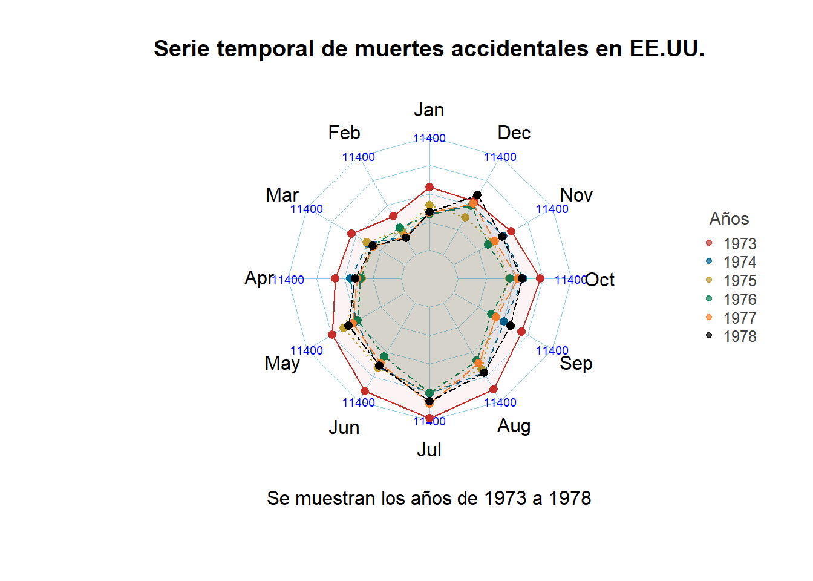
9.0.1 ———–
10 Gráfico de mosaico
Código
library(vcd)Código
mosaic(~ Class + Survived, data = Titanic, shade = TRUE, legend = TRUE)
Código
# Crear un marco de datos con categorías
data <- data.frame(
Categoria1 = rep(c("A", "B", "C"), each = 3),
Categoria2 = rep(c("X", "Y", "Z"), times = 3),
Count = c(10, 20, 30, 5, 15, 25, 20, 10, 5)
)
# Calcular proporciones
data <- data %>%
group_by(Categoria1) %>%
mutate(Proporcion = Count / sum(Count)) %>%
ungroup()
# Crear el gráfico de mosaico
ggplot(data, aes(x = Categoria1, y = Count, fill = Categoria2)) +
geom_tile(aes(height = Count)) +
labs(title = "Gráfico de Mosaico",
x = "Categoría 1",
y = "Proporción",
fill = "Categoría 2") +
theme_minimal()
Código
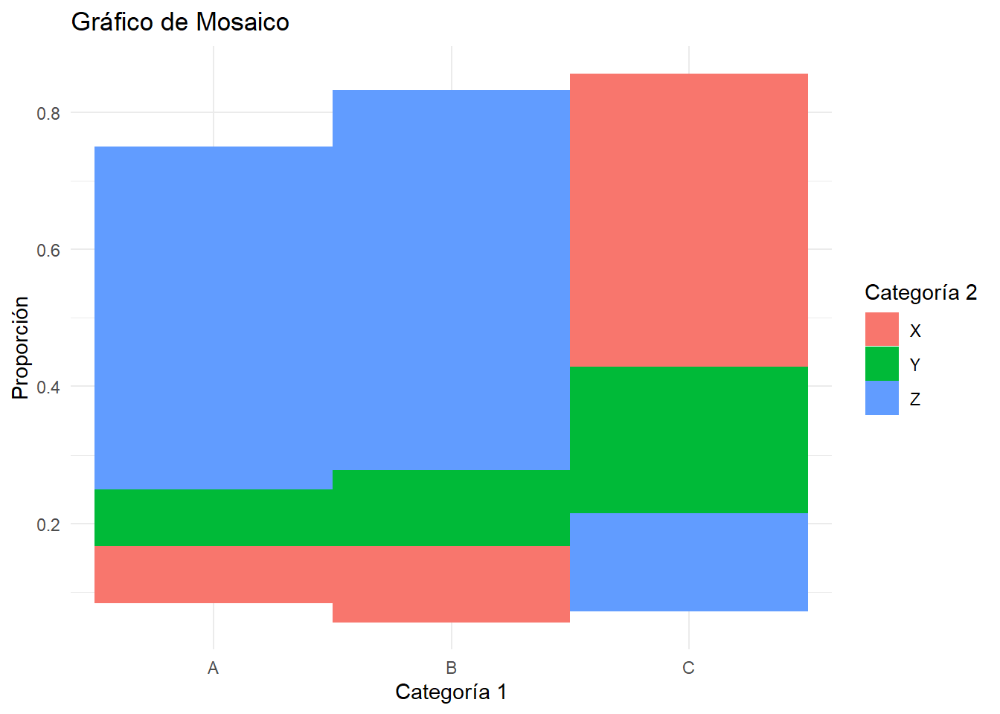
Código
#ggplot(data = fly) +
# geom_mosaic(aes(x=product(do_you_recline), fill = do_you_recline,
# conds = product(rude_to_recline))) +
# labs(title='f(do_you_recline | rude_to_recline)')11 Mapa de calor iteractivo
12 Tree map
Código
# Librerías
library(ggplot2)
library(treemapify)
# Datos
data <- data.frame(
category = c("A", "B", "C", "D"),
value = c(40, 30, 20, 10)
)
# Gráfico de árbol
ggplot(data, aes(area = value, fill = category, label = category)) +
geom_treemap() +
geom_treemap_text(colour = "white", place = "centre") +
labs(title = "Distribución de categorías")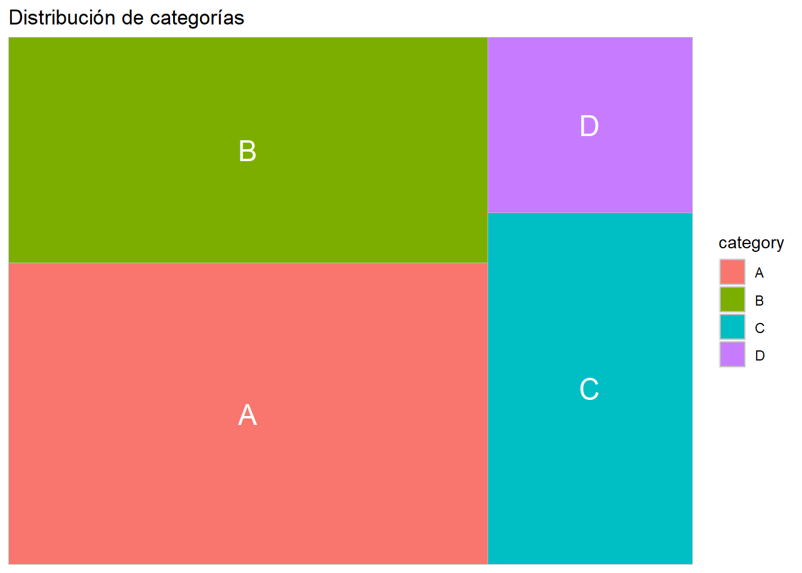
13 Mapa coroplético
Código
# Librerías
library(ggplot2)
library(maps)
# Datos
data <- map_data("state")
data$rate <- runif(nrow(data), min = 0, max = 1)
# Mapa coroplético
ggplot(data, aes(long, lat, group = group)) +
geom_polygon(aes(fill = rate), color = "white") +
scale_fill_continuous(low = "white", high = "blue") +
labs(title = "Tasa aleatoria por estado")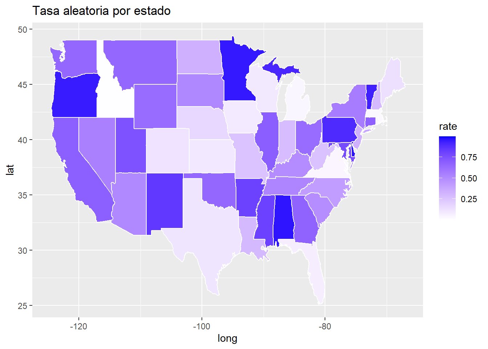
14 Gráfico de Sankey
Código
# Librerías
library(networkD3)
# Datos
nodes <- data.frame(name = c("A", "B", "C", "D"))
links <- data.frame(
source = c(0, 1, 1, 2, 3),
target = c(1, 2, 3, 3, 2),
value = c(10, 20, 30, 40, 50)
)
# Gráfico de Sankey
sankeyNetwork(Links = links, Nodes = nodes, Source = "source", Target = "target",
Value = "value", NodeID = "name", fontSize = 12)Código
## 11. Gráfico de Radar o Araña
# Librerías
library(fmsb)
# Datos
data <- data.frame(
A = c(10, 15, 8),
B = c(9, 17, 6),
C = c(12, 13, 9),
D = c(8, 10, 14),
E = c(15, 8, 12)
)
# Agregar las filas máximas y mínimas para escalar el gráfico
data <- rbind(rep(20, 5), rep(0, 5), data)
# Gráfico de radar
radarchart(data, axistype = 1,
pcol = rainbow(3),
pfcol = scales::alpha(rainbow(3), 0.4),
plwd = 2,
cglcol = "grey",
cglty = 1,
axislabcol = "grey",
caxislabels = seq(0, 20, 5),
cglwd = 0.8)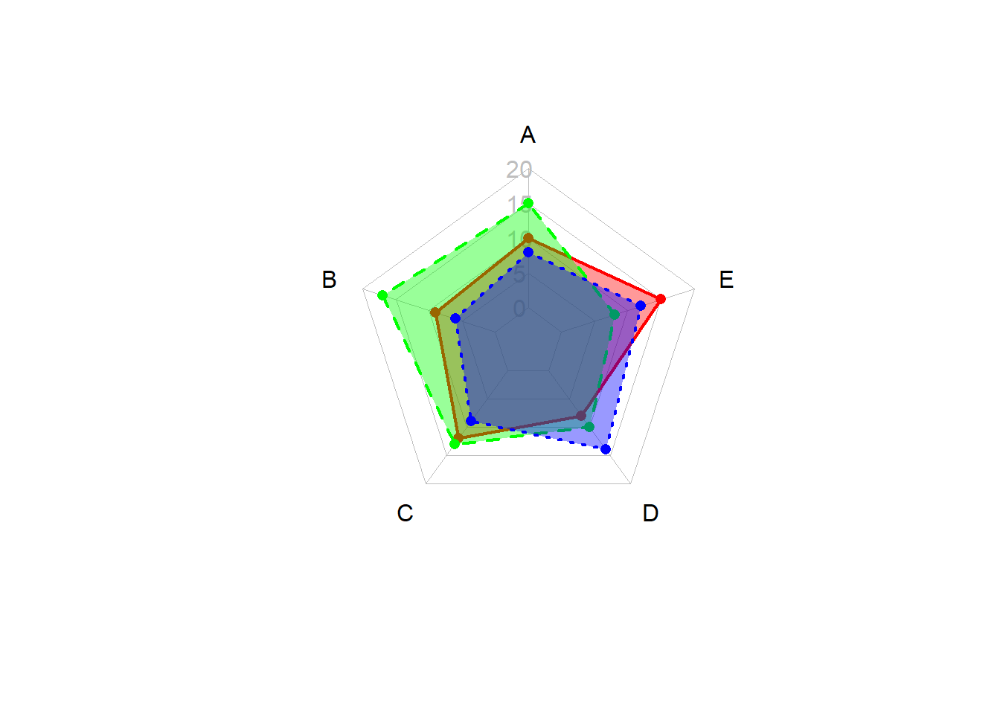
15 Gráfico de Mariposa (Population Pyramid)
Código
# Librerías
library(ggplot2)
# Datos
data <- data.frame(
age = rep(1:10, 2),
count = c(10, 20, 30, 40, 50, 40, 30, 20, 10, 5, 15, 25, 35, 45, 55, 45, 35, 25, 15, 10),
gender = rep(c("Male", "Female"), each = 10)
)
# Gráfico de mariposa
ggplot(data, aes(x = age, y = count, fill = gender)) +
geom_bar(stat = "identity", position = "dodge") +
coord_flip() +
labs(title = "Pirámide de población")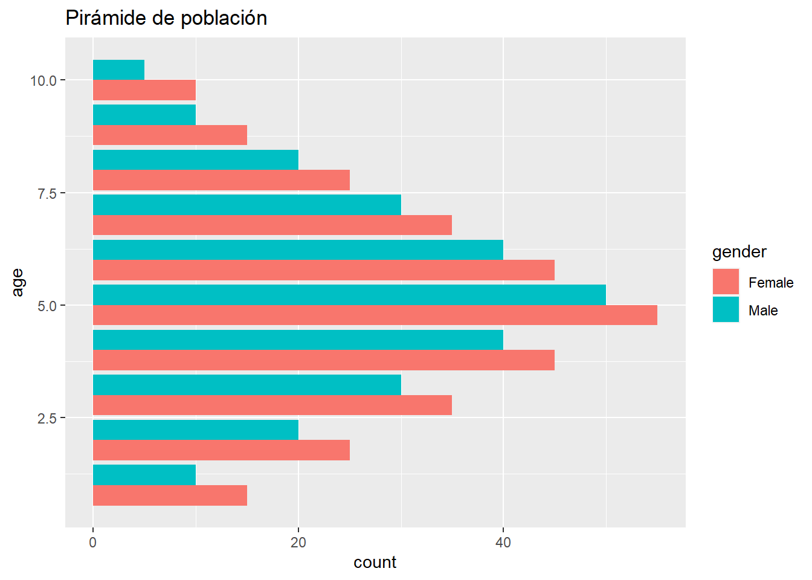
16 Gráfico de burbujas
Código
# Librerías
library(ggplot2)
# Datos
data <- data.frame(
x = rnorm(100),
y = rnorm(100),
size = rnorm(100, mean = 5, sd = 2)
)
# Gráfico de burbujas
ggplot(data, aes(x = x, y = y, size = size)) +
geom_point(alpha = 0.5) +
labs(title = "Gráfico de burbujas")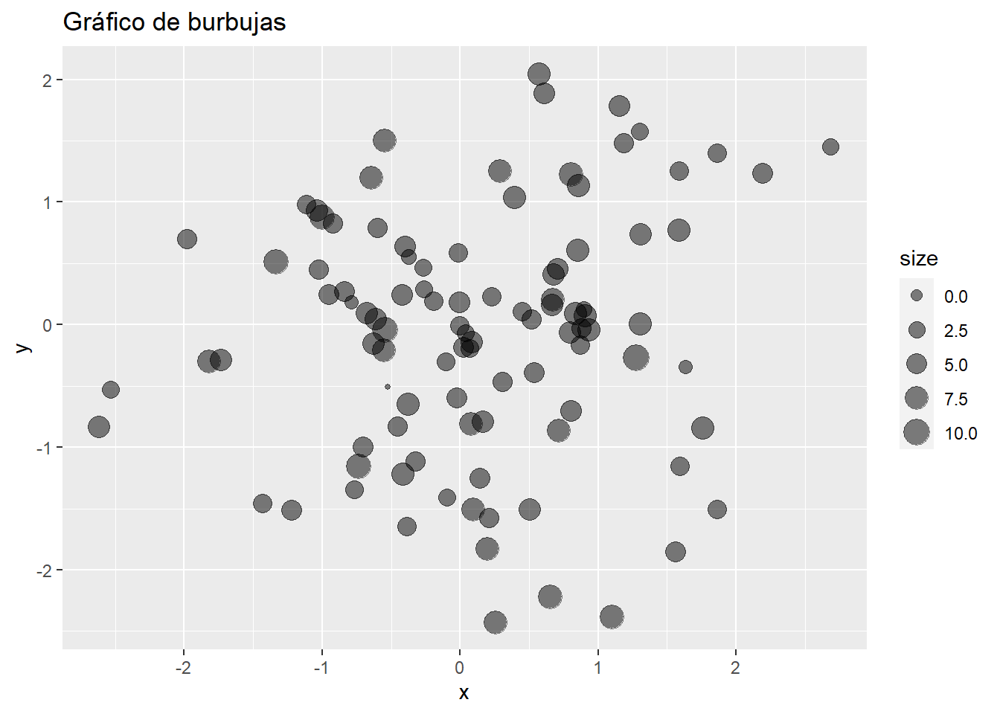